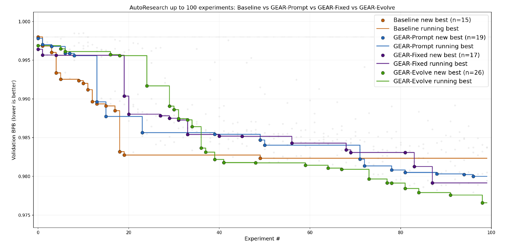
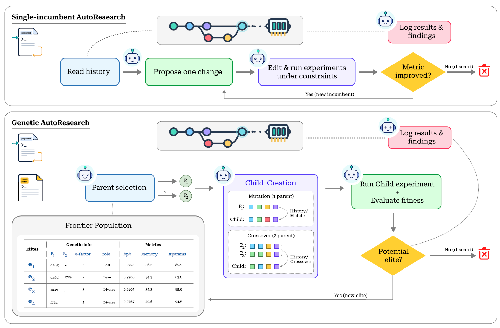
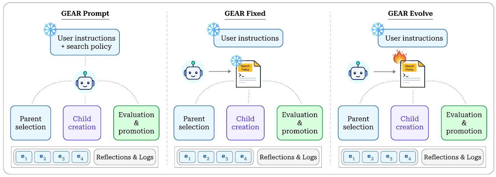
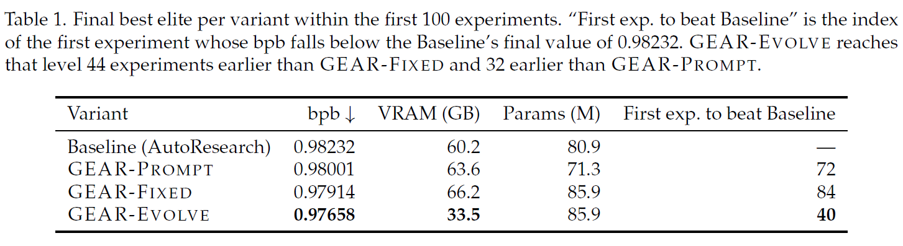
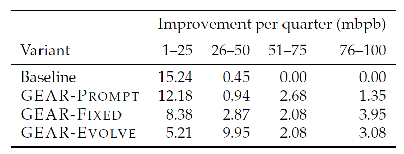
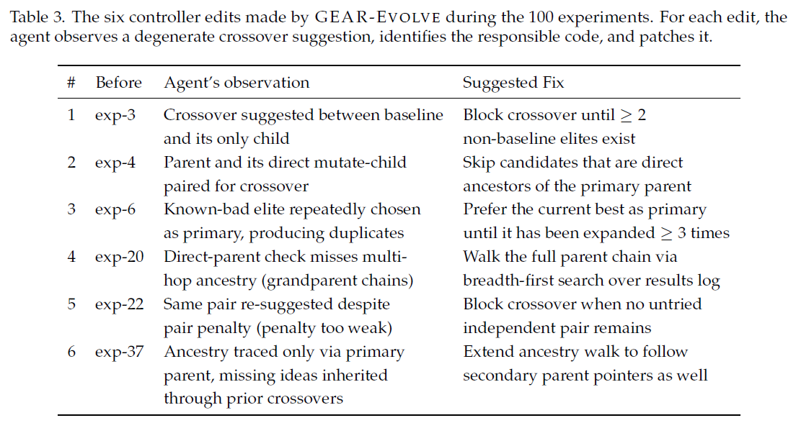

Research is not one path
AutoResearch-style hill climbing keeps only the current best, discarding useful partial ideas and complementary local optima.
GEAR replaces single-incumbent hill climbing in AutoResearch-style agents with a bounded frontier of elite research states, expanded through mutation, crossover, and—in its strongest variant—an evolvable search controller.
Main result

Keep multiple elite research states alive instead of collapsing to one incumbent.
Explore local variants and recombine complementary ideas across branches.
Let the agent repair the search policy when its invariants become too weak.
Overview
AutoResearch-style hill climbing keeps only the current best, discarding useful partial ideas and complementary local optima.
Each node preserves code, parentage, metrics, reflections, and productivity statistics for future expansion.
GEAR keeps the same training harness and objective, but swaps greedy keep-or-discard search for a structured frontier.
Autonomous ML research agents can now edit code, run experiments, inspect results, and decide what to try next. But a single-incumbent loop is a brittle representation of research: once a direction is worse than the current best, the concrete artifact behind that idea is usually gone.
GEAR treats agentic research as a population-based search process. It maintains a bounded frontier of elite nodes, selects parents by balancing productivity, novelty, coverage, and recency, then expands the frontier through mutation or semantic crossover.
The result is a drop-in genetic search policy for AutoResearch-style systems. Across 100 experiments on the same language-modeling setup, all GEAR variants beat the baseline, and the self-evolving controller achieves the lowest validation bits-per-byte.
Method
GEAR replaces the baseline loop with a frontier of elite nodes. The agent consults the frontier, selects one or two parents, creates a child, runs the fixed training job, evaluates fitness, and either promotes the child or discards it from the frontier.

GEAR forms a ladder from policy written in natural language, to policy externalized as deterministic code, to policy treated as a mutable search target. This separates what the agent changes in the experiment from how the agent searches.

Results
Under identical environments and 100 experiment steps, all GEAR variants achieve lower validation bpb than the AutoResearch baseline. GEAR-Evolve is strongest overall, reaching 0.97658 bpb and crossing the baseline plateau earliest.

The baseline concentrates almost all progress early and then stalls. GEAR variants keep improving across the full budget, showing the value of preserving diverse anchors and recombining ideas instead of committing to a single path.


Analysis
Single-parent edits let each elite branch test architecture, optimizer, schedule, and regularization changes without erasing other branches.
Complementary parents let the agent transplant useful changes across branches, turning separate partial wins into stronger children.
GEAR-Evolve identifies degenerate crossover behavior and patches the controller, improving the search loop itself mid-run.
The key empirical difference is not only final bpb. The baseline quickly converges to a local optimum, while GEAR maintains multiple lines of inquiry and continues discovering improvements over longer horizons.
Mechanized crossover is especially important: the fixed and evolved controllers enforce complementarity and avoid repeatedly using the same parent pair, producing substantially higher-quality crossover attempts than prompt-only execution.
Citation
@misc{jeddi2026geargeneticautoresearchagentic,
title={GEAR: Genetic AutoResearch for Agentic Code Evolution},
author={Ahmadreza Jeddi and Minh Ngoc Le and Hakki C. Karaimer and Konstantinos G. Derpanis and Babak Taati},
year={2026},
eprint={2605.13874},
archivePrefix={arXiv},
primaryClass={cs.NE},
url={https://arxiv.org/abs/2605.13874},
}